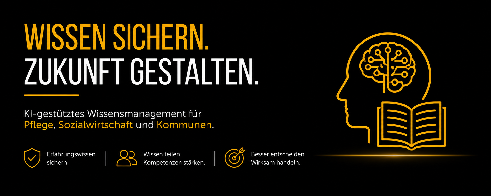

Wissensmanagement mit Künstlicher Intelligenz

Erfahrungswissen effizient sichern und transferieren – eingeordnet für Pflege, Sozialwirtschaft, HomeCare und Kommunen
Erfahrungswissen – die unsichtbare Ressource im Gesundheitswesen
Kurze Einführung · von Thomas Bade
Transkript anzeigen
Willkommen auf dieser Seite zum Thema Wissensmanagement mit Künstlicher Intelligenz.
Der demografische Wandel stellt Einrichtungen des Gesundheits- und Sozialwesens vor eine doppelte Herausforderung: Fachkräfte gehen in Rente – und mit ihnen geht wertvolles Erfahrungswissen verloren, das sich nicht einfach in Schulungsunterlagen übersetzen lässt.
Das Forschungsprojekt KI_eeper – gefördert durch das Bundesministerium für Bildung und Forschung – hat untersucht, wie KI-basierte Assistenzsysteme dieses implizite Wissen automatisiert erfassen, verarbeiten und im Betrieb verfügbar machen können.
Entscheidend dabei: Es geht nicht nur um Technik. KI-Systeme gelingen nur dann, wenn sie von den Beschäftigten gewollt und gebraucht werden. Der menschzentrierte, soziotechnische Ansatz ist der Kern des KI_eeper-Toolkits.
Diese Seite überträgt die Forschungsergebnisse auf den Kontext von Pflege, Sozialwirtschaft, HomeCare und Kommunen – und zeigt, welche Konsequenzen sich daraus für den EU AI Act und die Betreiberpflichten ergeben.
Ihr Thomas Bade
Executive Summary
KI im Gesundheitswesen scheitert nicht an der Technik – sondern an Akzeptanz, implizitem Wissen und falscher Einführungsstrategie.
Die Publikation „Wissensmanagement mit Künstlicher Intelligenz – Erfahrungswissen effizient sichern und transferieren" dokumentiert die Ergebnisse des BMBF-geförderten Forschungsprojekts KI_eeper Digitale KI-basierte Assistenz zur Wissensaufnahme, -verarbeitung, -speicherung und -anwendung an produktionsgebundenen Arbeitsplätzen (KI_eeper) . Im Zentrum steht ein soziotechnisches 6-Bausteine-Modell, das Unternehmen und Einrichtungen bei der nutzerorientierten Einführung von KI-basiertem Wissensmanagement unterstützt.
Für den Gesundheits- und Sozialsektor sind diese Erkenntnisse besonders relevant.
Der altersbedingte Abgang der Babyboomer-Generation führt in Pflege, HomeCare und Sozialwirtschaft zum Verlust von implizitem Erfahrungswissen, das weder in Handbüchern noch in Schulungen vollständig abgebildet werden kann.
Kernaussage: Wissensmanagement mit KI gelingt nur dann, wenn die Einführung menschzentriert, partizipativ und zielgruppenspezifisch gestaltet wird – und wenn die regulatorischen Anforderungen des EU AI Act von Anfang an mitgedacht werden.
Warum Wissensmanagement im Gesundheitswesen besonders dringend ist
Das Forschungsprojekt KI_eeper identifiziert vier Megatrends, die den Wissenstransfer in Unternehmen und Einrichtungen zunehmend erschweren. Für den Gesundheits- und Sozialsektor gelten alle vier – mit besonderer Intensität.
Eine ganze Generation geht in Rente – und Erfahrungswissen geht verloren
Die Babyboomer-Generation verlässt den Arbeitsmarkt. In der Pflege bedeutet das: Jahrzehntelang aufgebautes Versorgungswissen – Beobachtungsfähigkeiten, Risikoeinschätzungen, Situationsinterpretationen – droht unwiederbringlich zu verschwinden, wenn es nicht systematisch gesichert wird.
Die Arbeitskräftelücke wächst: Wissensübertragung wird schwieriger
Wenn auf eine erfahrene Fachkraft mehrere Berufseinsteiger folgen, fehlt die Zeit für klassisches Mentoring. KI-basierte Assistenzsysteme können hier Abhilfe schaffen – indem sie Erfahrungswissen automatisiert im Arbeitsprozess erfassen und abrufbar machen.
Multikulturelle Belegschaften erschweren Einarbeitung und Wissenstransfer
Im Pflegesektor sind sprachliche und kulturelle Barrieren besonders ausgeprägt. Visuelle Darstellungen, niedrigschwellige Formate und KI-gestützte Übersetzungsfunktionen sind notwendige Bestandteile jedes Wissensmanagement-Systems.
Implizites Wissen lässt sich nicht einfach dokumentieren
Pflegefachkräfte wissen oft selbst nicht, was sie wissen: Situative Entscheidungslogiken, Risikoeinschätzungen bei der Vitalzeichenkontrolle, Einschätzungen von Sturzsituationen – das ist tacit knowledge, das sich nur im Arbeitsprozess selbst erfassen lässt.
Das soziotechnische 6-Bausteine-Modell
Das KI_eeper-Methoden-Toolkit beschreibt sechs aufeinander aufbauende Bausteine für die menschzentrierte Einführung von KI-basiertem Wissensmanagement. Dieses Modell wird auf den Kontext von Pflege, Sanitätshaus, Arztparxis und Gesundheitswirtschaft übertragen.
Baustein 1: Den geeigneten Anwendungsfall finden und Projektziele festlegen
Nicht jeder Versorgungsprozess eignet sich als KI-Anwendungsfall. In moderierten Workshops mit Führungskräften und Fachpersonal wird herausgearbeitet, wo Erfahrungswissen besonders kritisch ist und wo KI den größten Mehrwert bietet. Werkzeug: Prozesslandkarte mit „Glühbirnen"-Markierung. Übertragung auf Pflege: Welche Pflegestationen? Welche Hochrisikoprozesse gem. EU AI Act Anh. III?
Baustein 2: Beschäftigte für Technik und KI begeistern
Vor jeder Implementierung steht der Kick-off: Informationsveranstaltungen mit den an der Patientenversorgung involvierten Mitarbeitern, abgestimmt mit Betriebsrat/Mitarbeitervertretung. Schlüssel: Alltagsnahe KI-Beispiele (Navigations-Apps, Sprachassistenten). Besonders wichtig: Bildsprache statt Text, um Sprachbarrieren zu überbrücken. Übertragung auf Pflege: 30-Minuten-Formate passend zum Schichtdienst; mehrsprachige Materialien.
Baustein 3: Prozess- und Anforderungsanalyse
Durch leitfadengestützte Fragebögen und teilnehmendes Beobachten wird der Versorgungsprozess detailliert erfasst. Externe Moderatoren, die den Prozess nicht kennen, stellen mehr Fragen – und machen damit unbewusstes Erfahrungswissen sichtbar. Regulatorische Verknüpfung: Basis für die Hochrisiko-Einstufung nach EU AI Act Anh. III und die DSFA nach Art. 9 DSGVO.
Bausteine 4 & 5: Risikofolgenabschätzung und Bewertung der technischen Konzeption
Analyse von Risiken für Beschäftigte, Betroffene (z.B. Angehörige) und Patienten: Datenschutz (Art. 9 DSGVO), Überwachungsängste, Haftungsfragen. Gleichzeitig: Bewertung der KI-Systemarchitektur aus Betreibersicht nach EU AI Act (Art. 13, 14, 12). Werkzeug: FMEA, EU AI Act × MDR; HAIP AI Vendor Disclosure Framework (NEJM AI 2026, 29 Kriterien).
Baustein 6: Einführung der Technik und Optimierung
Iterative Implementierung mit regelmäßigen Feedbackschleifen der Anwender. Wichtig: Die Rücksprung-Funktion – Mitarbeiter müssen KI-Empfehlungen jederzeit übergehen können (Human-in-the-Loop nach Art. 14 EU AI Act). Post-Market Surveillance: Dokumentationspflichten nach Art. 26 EU AI Act beginnen mit dem ersten produktiven Einsatz.
Implizites Wissen – die unsichtbare Ressource
Wissen bei Leistungserbringern des Gesundheitswesens existiert auf zwei Ebenen. Nur wenn beide systematisch erfasst werden, kann ein KI-Assistenzsystem den vollen Nutzen entfalten.
Dokumentiertes Wissen
Pflegedokumentationen, Behandlungspläne, Pflegestandards, Dienstanweisungen, MDK-Prüfprotokolle – das Wissen, das bereits in Systemen und Unterlagen vorhanden ist. Es lässt sich direkt in KI-Systeme einpflegen.
Einschränkung: Es deckt nur einen Bruchteil des tatsächlich angewendeten Versorgungswissens ab.
Erfahrungswissen – das eigentliche Kapital
Die Einschätzung, dass ein Patient mit unauffälligen Vitalwerten trotzdem „nicht gut aussieht". Das Wissen, wann bei einem demenziellen Patienten das Verhalten auf Schmerzen hinweist. Die Routine, wie man eine Sturzsituation im Voraus erkennt.
KI-Lösung: KI-Assistenzsysteme können dieses Wissen automatisiert im Arbeitsprozess erfassen – durch Sensorik, Spracheingabe und strukturiertes Feedback.
Zielgruppenspezifische Qualifizierung
Alle Lernmodule werden so aufgebaut, dass verschiedene Zielgruppen und prozessbezogene Besonderheiten berücksichtigt werden. Eine Einheitslösung gibt es nicht.
| Zielgruppe | Lernziel | Modul-Schwerpunkt | Besonderheiten |
|---|---|---|---|
| Leitungsebene GF, Meister, Heimleitung | Strategische KI-Entscheidung, Change-Architektur, Governance | Anwendungsfall-Auswahl (Baustein 1), Betreiberpflichten Art. 26 EUAIA | Kompakte Formate (2–3 Std.); Fokus auf ROI und Haftung |
| Fachliche Koordination Prozessverantwortliche, QM, Datenschutz | Prozessanalyse, Anforderungsdefinition, Risikoabschätzung | Baustein 3 (Prozessanalyse),
FMEA
Fehlermöglichkeits- und Einflussanalyse Die FMEA ist eine präventive Methode im Qualitäts- und Risikomanagement. Sie dient dazu, potenzielle Fehler und Risiken in Produkten oder Prozessen bereits in der Planungsphase zu identifizieren, zu bewerten und durch Gegenmaßnahmen zu vermeiden. , HAIP-Framework Hiroshima AI Process Reporting Framework Das HAIP-Framework ist ein von den G7-Staaten und der OECD ins Leben gerufenes, freiwilliges Rahmenwerk für globale KI-Transparenz und Governance. Es übersetzt den internationalen Verhaltenskodex in konkrete Berichtsstrukturen, um die Entwicklung sicherer, geschützter und vertrauenswürdiger fortschrittlicher KI-Systeme zu gewährleisten. | Methodenkompetenz; Schnittstellenfunktion Technik–Team |
| Pflegefachkräfte, Care-Teams, OT/OST Meister | Technikakzeptanz, kompetente Nutzung, Feedbackkompetenz | Baustein 2 (Begeisterung), Baustein 6 (Nutzung & Feedback) | Schichtdienst-gerechte Kurzformate (15–30 Min.); Bildsprache; mehrsprachig |
| KI-Compliance / IT | Regulatorische Betreiberpflichten vollständig erfüllen | EU AI Act Art. 13, 14, 26; MDR; Post-Market Surveillance | Technisches Tiefenwissen; Schnittstelle zu Anbietern und Notified Bodies |
| Verbände & Träger als Multiplikatoren | Wissenstransfer in die Fläche der Sozialwirtschaft | ESF+-Qualifizierungsprogramm; Verbandsmodell; Reallabor-Transfer | Skalierbarkeit; intergenerationaler Wissenstransfer als Leitthema |
Wissensmanagement-KI und EU AI Act: Was Betreiber wissen müssen
🔴 Hochrisiko-Prüfung: Pflicht vor dem Einsatz
KI-Systeme, die in der Pflege Entscheidungen mit Auswirkung auf Pflegeeinstufungen, Personalplanung oder Sozialleistungen treffen, fallen potenziell unter Hochrisiko-KI (EU AI Act Anh. III Nr. 5). Vor dem Einsatz ist eine Konformitätsbewertung erforderlich.
Praxis-Tipp: Der KI_eeper-Baustein 4 (Risikofolgenabschätzung) liefert die methodische Grundlage.
📋 Betreiberpflichten nach Art. 26 EU AI Act
Als Betreiber von KI-Assistenzsystemen tragen Einrichtungen die Verantwortung für: Protokollierung (Art. 12), menschliche Aufsicht und
Override-Möglichkeit
Artikel 14: Menschliche Aufsicht
Eine "Override-Möglichkeit" (manuelle Überbrückung) beschreibt das gezielte Außerkraftsetzen von automatischen Systemen, Standardeinstellungen oder Programmierregeln.
(Art. 14), Transparenz gegenüber betroffenen Personen (Art. 13) und Post-Market Surveillance.
🔐 DSGVO Art. 9: Gesundheitsdaten ab Tag 1 schützen
KI-Wissensmanagement bei Versorgungsprozessen verarbeitet zwingend Gesundheitsdaten (besondere Kategorie nach Art. 9 DSGVO). Eine Datenschutz-Folgenabschätzung (DSFA) ist bereits in der Anforderungsanalyse (Baustein 3) zu beginnen – nicht erst bei der Implementierung.
🤝 Partizipation ist Compliance
Die Einbeziehung der Mitarbeitervertretung und aller Beschäftigten ist nicht nur ethisch geboten, sondern auch regulatorisch relevant. Akzeptanz verhindert Fehlanwendungen, die zu Compliance-Verstößen führen können.
„Die Einführung von KI in Unternehmen kann mit Ängsten und Unsicherheiten bei den Beschäftigten einhergehen. Häufig wird mit Technik- und KI-Einführung Arbeitsplatzverlust oder Überwachung assoziiert. Eine daraus resultierende mangelnde Akzeptanz kann dem erfolgreichen Einsatz von KI-Systemen im Betrieb entgegenwirken."
Ottersböck / Dander / Stowasser (Hrsg.), Vorwort – Wissensmanagement mit Künstlicher Intelligenz, Springer Vieweg 2026
5 praktische Tipps aus dem Toolkit
Diese Empfehlungen stammen direkt aus der Praxiserprobung im KI_eeper-Projekt und wurden für den Einsatz im Sanitätshaus, in der Arztpraxis, in der Pflege und bei HomeCare Unternehmen adaptiert.
Machen Sie KI im Alltag sichtbar – bevor Sie von KI im Betrieb sprechen
Zeigen Sie Mitarbeitern in Kick-off-Workshops, welche KI sie bereits täglich nutzen: Navigations-App, Übersetzer-App, Sprachassistenten. Das senkt die Hemmschwelle. Nutzen Sie Bildsprache statt Text, um Sprachbarrieren zu überbrücken.
Lassen Sie Ihren Prozess von Externen moderieren
Wer den Prozess nicht kennt, stellt die besseren Fragen. Im KI_eeper-Projekt haben externe Moderatoren unbewusstes Erfahrungswissen sichtbar gemacht, das Mitarbeitern selbst nicht mehr auffiel – weil es Teil ihrer täglichen Routine geworden war.
Entwickeln Sie ein Kommunikationskonzept – bevor der Flurfunk entsteht
KI-Projekte erzeugen informelle Gerüchte. Wer zu spät kommuniziert, kämpft gegen Fehlinformationen an. Nutzen Sie alle Kanäle: Teambesprechungen, Aushänge in der Küche, Mitarbeiterzeitschrift, Intranet, Shopfloor-Kommunikation.
Planen Sie Rücksprünge ein
Mitarbeiter müssen KI-Empfehlungen jederzeit übergehen können – das ist nicht nur gute Praxis, sondern EU AI Act-Anforderung (Art. 14). Planen Sie diese Override-Funktion von Anfang an in das Systemdesign ein, nicht als Nachbesserung.
Starten Sie mit dem Readiness-Check
Bevor Sie in KI-Wissensmanagement investieren: Prüfen Sie, ob Ihre Einrichtung bereit ist. Sind Prozesse dokumentiert? Gibt es eine KI-Strategie? Ist die Mitarbeitervertretung eingebunden? Der folgende Readiness-Check gibt Ihnen eine erste Orientierung.
Readiness-Check: Ist Ihre Einrichtung bereit für KI-Wissensmanagement?
Dieser Check basiert auf dem Readiness-Assessment aus dem KI_eeper-Toolkit (Chaput / Deutschmann / Volkmann 2026) und wurde für Einrichtungen des Gesundheits- und Sozialwesens adaptiert. Bewerten Sie jede Aussage ehrlich für Ihre Einrichtung.
A – Strategische Voraussetzungen
| Aussage | Bewertung |
|---|---|
| Unsere Einrichtung hat eine schriftliche KI-Strategie oder plant eine. | |
| Die Leitungsebene unterstützt aktiv die Einführung von KI-Systemen. | |
| Wir haben einen Datenschutzbeauftragten, der in KI-Projekte eingebunden wird. |
B – Prozess- und Wissensbasis
| Aussage | Bewertung |
|---|---|
| Unsere Kernprozesse (Herstellung Sonderanfertigung, Versorgung, Dokumentation, Übergabe) sind strukturiert dokumentiert. | |
| Wir wissen, in welchen Bereichen besonders viel implizites Erfahrungswissen steckt. | |
| Erfahrene Fachkräfte sind bereit, ihr Wissen aktiv in ein Assistenzsystem einzubringen. |
C – Team und Akzeptanz
| Aussage | Bewertung |
|---|---|
| Die Mitarbeitervertretung wird frühzeitig in Technikprojekte eingebunden. | |
| Unser Team ist offen für digitale Veränderungen (auch wenn Skepsis vorhanden ist). | |
| Wir bieten sprachbarrierearme Kommunikation für Mitarbeitende mit Migrationshintergrund. |
D – Regulatorische Bereitschaft
| Aussage | Bewertung |
|---|---|
| Wir kennen unsere Betreiberpflichten nach EU AI Act Art. 26. | |
| Wir können beurteilen, ob ein KI-System in unserer Einrichtung als Hochrisiko-KI einzustufen ist. | |
| Eine Datenschutz-Folgenabschätzung (DSFA) für Gesundheitsdaten-Verarbeitung ist uns vertraut. |
|
Springer Vieweg 2026 · ifaa-Edition
Ottersböck / Dander / Stowasser (Hrsg.): Wissensmanagement mit Künstlicher Intelligenz – Erfahrungswissen effizient sichern und transferieren. ISBN 978-3-662-71590-1 | DOI: 10.1007/978-3-662-71591-8 | Open Access CC BY 4.0 Zur Publikation |
Von der Forschung direkt in den Arbeitsalltag!
Alle vorgestellten Methoden, Checklisten und Werkzeuge lassen sich sofort in bestehende Prozesse integrieren und praxisnah umsetzen. |
Inhalte dieser Webseite dürfen geteilt werden, sofern der Urheber Thomas Bade genannt wird und keine Bearbeitungen verbreitet werden. Quelle: thomas-bade.de